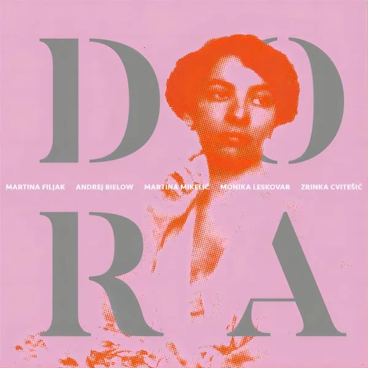
Dora
- Werke von
- Dora Pejačević
- Monika spielt
- Trio für Violine, Violoncello und Klavier C-Dur op. 29
- Mit
- Martina Filjak · Andrej Bielow · Martina Mikelić · Zrinka Cvitešić
Der Player wird erst beim Start von Spotify geladen.
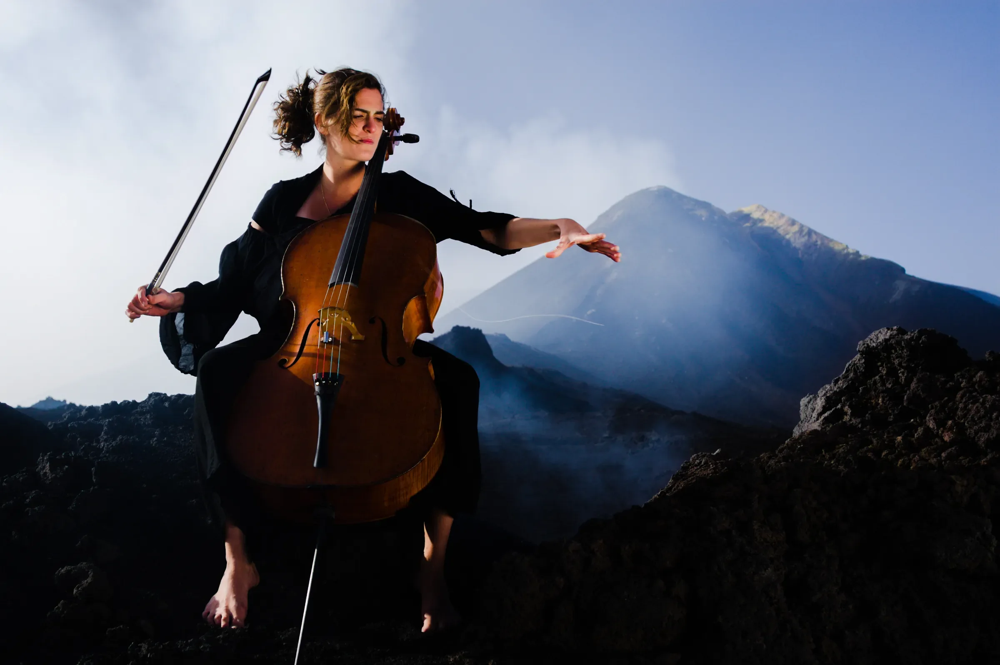
Mit dreizehn Jahren wurde sie jüngste Preisträgerin des Internationalen Tschaikowsky-Wettbewerbs. Heute ist sie Solistin, Kammermusikerin und Pädagogin, für die jeder einzelne Ton eine Frage der Vollkommenheit ist.
Kreuztal, Deutschland
Musikschule Elly Bašić, Zagreb — bei Dobrila Berković Magdalenić
Sendai, Japan — erster Preis; mit dreizehn die jüngste Preisträgerin
Wien — erste kroatische Finalistin
Mailand — Preisträgerin
München — Preis und Publikumspreis
Neuseeland — Preisträgerin
Hochschule für Musik Hanns Eisler, Berlin
Münchner Philharmoniker, Saison 2010/2011
Conservatorio della Svizzera italiana, Lugano
Musikakademie der Universität Zagreb
Durch die Jahre scrollen
Monika Leskovar, geboren 1981, studierte von 1996 bis 2005 Violoncello an der Hochschule für Musik „Hanns Eisler“ Berlin und arbeitete dort auch als Assistentin am Lehrstuhl von Prof. David Geringas. In Meisterkursen u. a. bei Mstislav Rostropowitsch und Bernard Greenhouse perfektionierte Monika Leskovar ihr Können.
Sie gewann mehrere erste Preise bei internationalen Violoncello-Wettbewerben, u. a. beim 5. Adam International Cello Festival and Competition, Neuseeland, und beim 2. International Tchaikovsky Competition for Young Musicians, Japan, sowie den zweiten Preis und den Publikumspreis des Internationalen ARD-Musikwettbewerbs 2001 und den dritten Preis beim Rostropowitsch-Wettbewerb.
Sie spielt mit bedeutenden Dirigenten, u. a. mit Valery Gergiev, Thomas Hengelbrock, Kazushi Ono, Alan Buribayev, Martin Turnovský und Johannes Wildner, und mit vielen anerkannten Orchestern wie der Moskauer Philharmonie, der Sendai Philharmonie und der Slowenischen Philharmonie, dem Royal Symphony Orchestra Sevilla, dem St. Petersburger Symphonieorchester und der Zagreber Philharmonie.
Ihr künstlerisches Interesse gilt auch der Kammermusik. Dabei konzertiert sie zusammen mit Giovanni Sollima, Gidon Kremer und der Kremerata Baltica, Yuri Bashmet, Boris Berezovsky, Vassily Lobanov, Julian Rachlin, Itamar Golan, Mischa Maisky, Tabea Zimmermann und Sofia Gubaidulina. Des Weiteren runden Auftritte mit dem Prager Kammerorchester und dem Litauischen Kammerorchester ihre kammermusikalischen Aktivitäten ab.
Monika Leskovar tritt bei internationalen Musikfestivals auf und gibt Rezitale in Europa, Japan, Australien und Neuseeland. Auf drei CD-Einspielungen bietet sie eine Auswahl aus der Cellomusik des 19. und 20. Jahrhunderts dar.

Der Player wird erst beim Start von Spotify geladen.
Der Player wird erst beim Start von Spotify geladen.
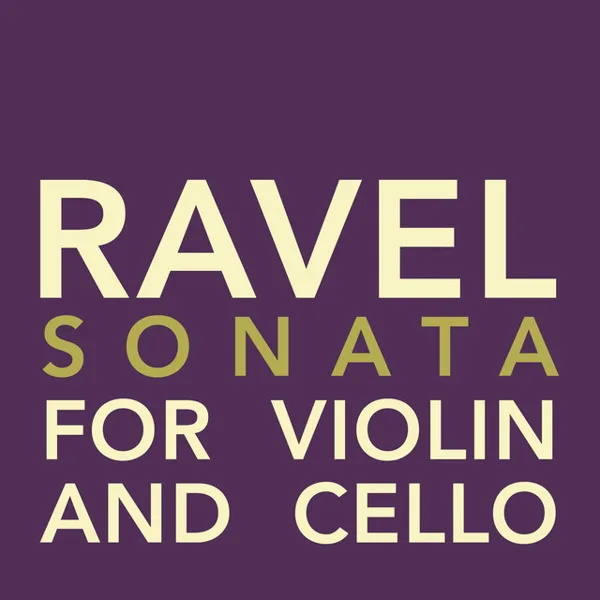
Der Player wird erst beim Start von Spotify geladen.
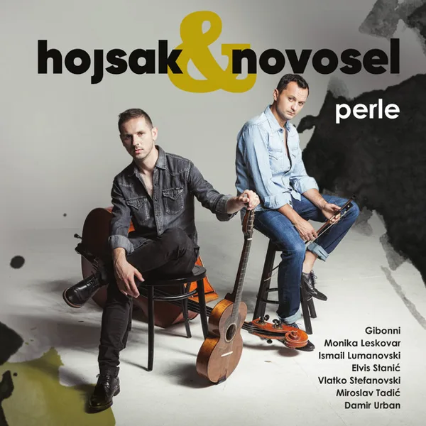
Der Player wird erst beim Start von Spotify geladen.
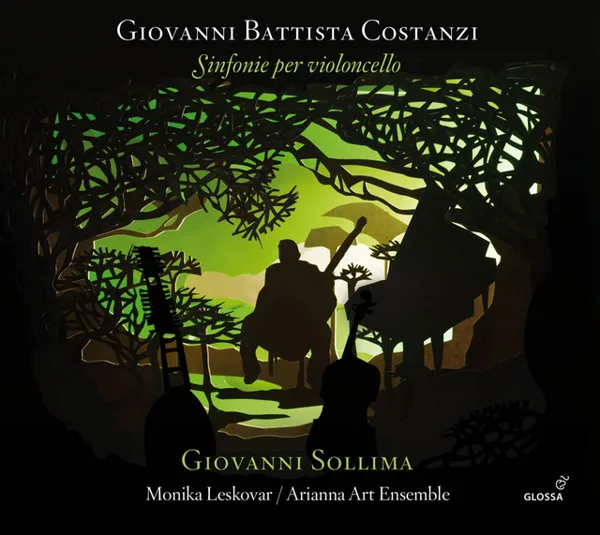
Der Player wird erst beim Start von Spotify geladen.
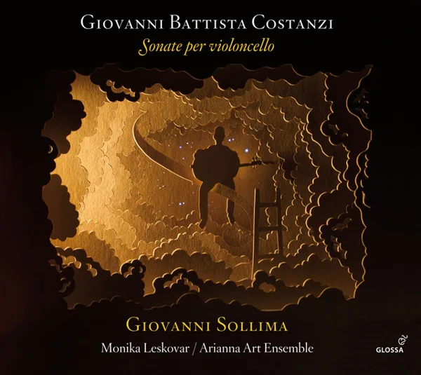
Der Player wird erst beim Start von Spotify geladen.
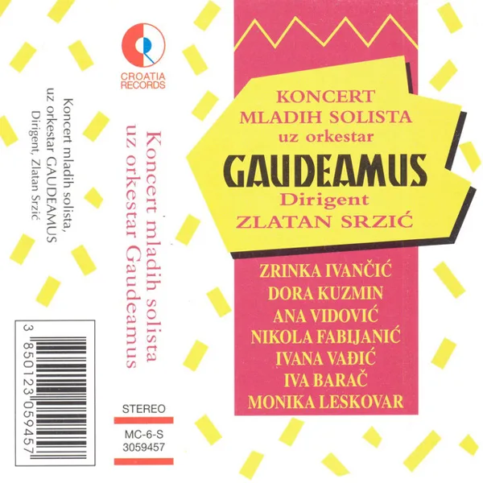
Der Player wird erst beim Start von Spotify geladen.
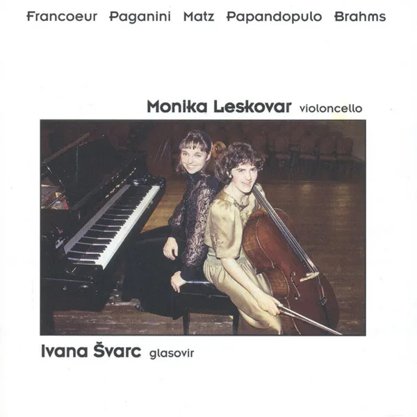
Der Player wird erst beim Start von Spotify geladen.
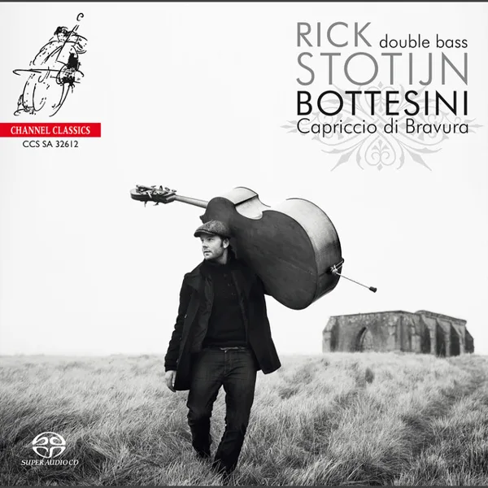
Der Player wird erst beim Start von Spotify geladen.
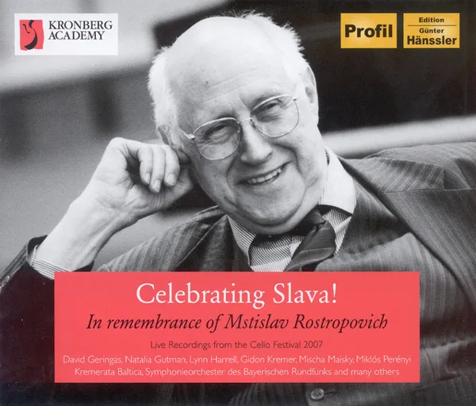
Der Player wird erst beim Start von Spotify geladen.
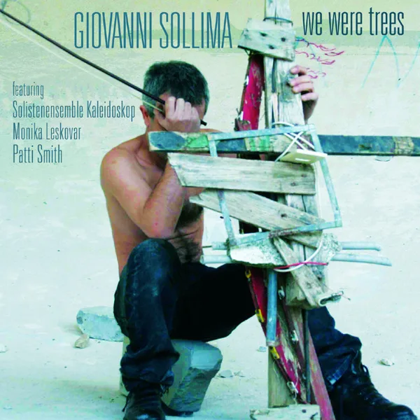
Der Player wird erst beim Start von Spotify geladen.
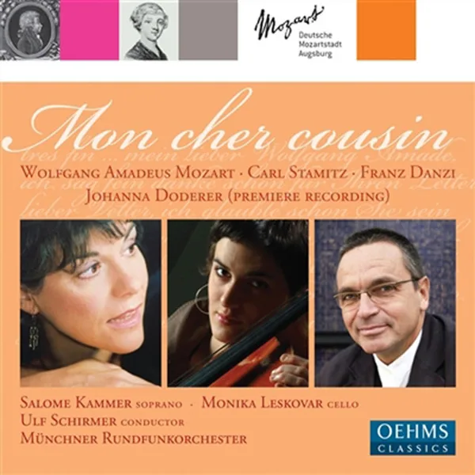
Der Player wird erst beim Start von Spotify geladen.
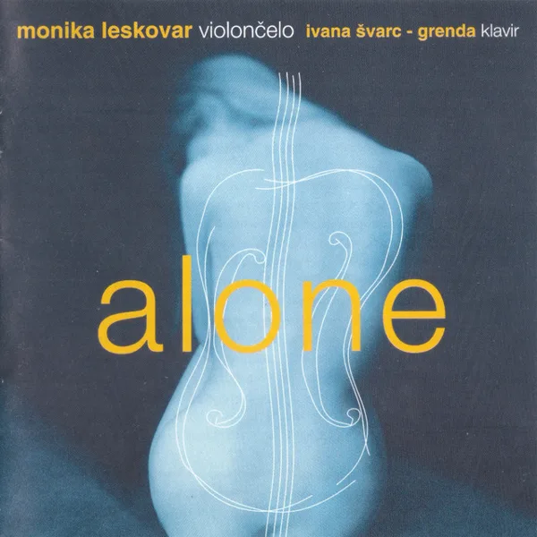
Der Player wird erst beim Start von Spotify geladen.
Fotos in voller Auflösung für die Presse: Foto öffnen und Original herunterladen.
Saite antippen, um sie zu hören, oder Mikrofon einschalten
Der Klang wird nur in Ihrem Browser verarbeitet und nirgendwohin gesendet.